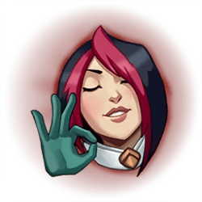
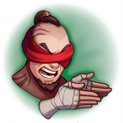
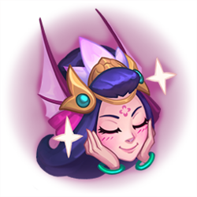

Número de Clientes
-
Número de Coaches
4
Número de Boosters
4
Cuentas en Venta
6
Ventajas de nuestro servicio
Aceptamos los métodos de pago más populares de la región, asegurándonos de proveerte la oportunidad de acceder a tu boost, tu coach o a tu siguiente cuenta main de la forma que vos decidas. Vas a poder abonar nuestros servicios con crypto a través de Binance o Metamask, con MercadoPago e incluso vía Paypal
Ofrecemos canales de comunicación constante en el proceso de boosting para asegurarnos de que la experiencia resulte amigable y constructiva para el cliente. ¡Consulta en el apartado de Contacto sobre las opciones de duoboost!
Nuestro trabajo se realiza con altos estándares de profesionalidad y poseen garantía de baneo por un mes en el caso de boosting y de por vida si adquiriste con nosotros una cuenta nueva
Nos preocupa tu cuenta, por eso nuestros boosters desempeñan su tarea bajo una estricta norma de 0% toxicidad in game, resguardando así la integridad de tu cuenta
Somos líderes en satisfacer a nuestros clientes
El camino de Yuumi, la gata mágica
Yuumi, una gatita mágica proveniente de la Ciudad de Bandle, alguna vez fue la compañera de una hechicera yordle, Norra. Cuando su dueña desapareció misteriosamente, Yuumi se convirtió en la Guardiana del Libro de los Umbrales, perteneciente a Norra, cuyas páginas contienen portales que usan para viajar y buscarla. En su deseo de cariño, Yuumi busca compañeros amigables con quienes formar un equipo a lo largo de su travesía, protegiéndolos con escudos luminosos y su feroz determinación. Libro se esfuerza por mantener a Yuumi enfocada en su misión, pero las comodidades terrenales, como las siestas y el pescado, a menudo capturan su atención. Sin embargo, al final, ella siempre vuelve a su misión de encontrar a su amiga. ¿Qué tiene que ver Yuumi con una web de eloboost y coaching? Podríamos decírtelo... ¡O podrías ver un montage de Yuumi! ¡Video! ¡Video!